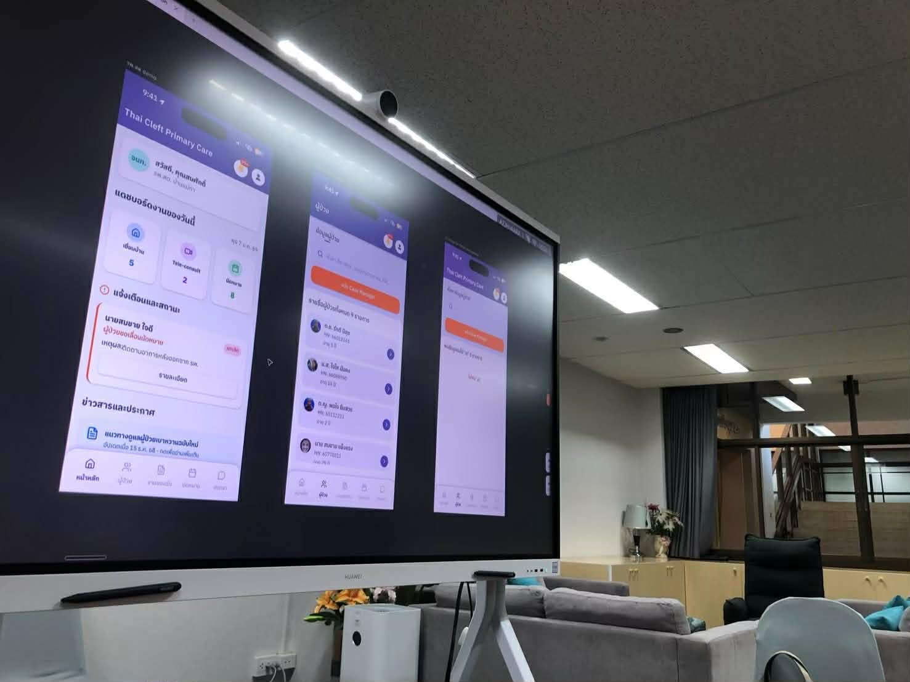
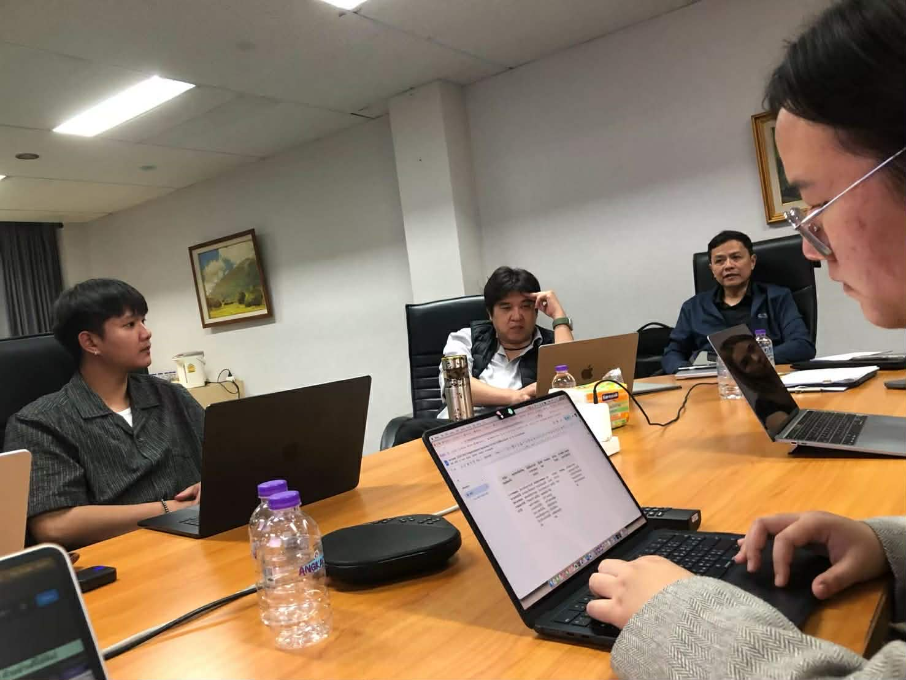
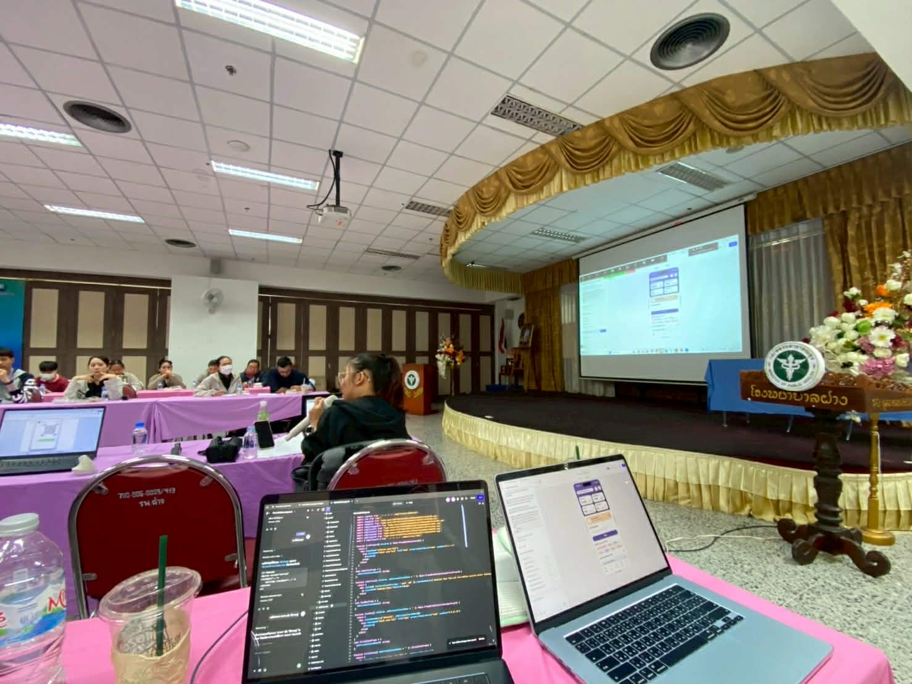
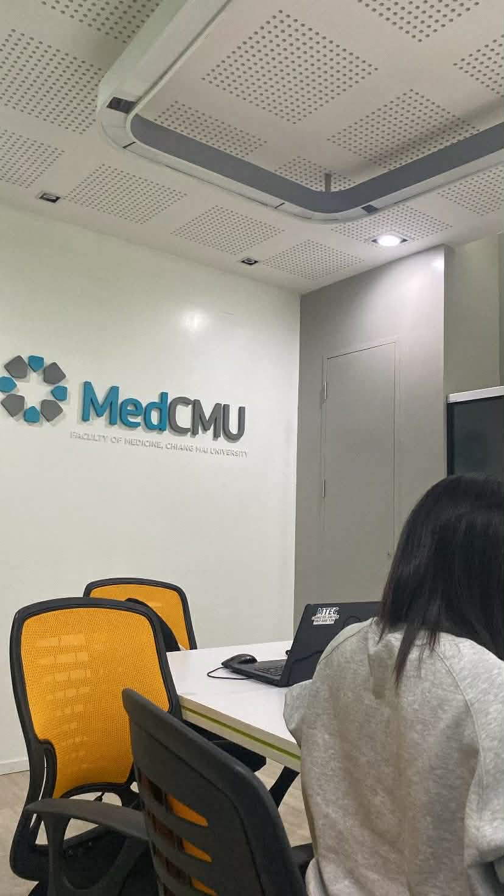

Requirements Gathering
A deep dive into understanding user needs, aligning with
client goals, and establishing project foundations.

01. Client Workshops
Collaborative Planning
Client workshop and UX/UI design presentation with the client and multidisciplinary team at Chiang Mai University. I presented both Wireframe Designs to showcase data structure and Clickable Prototypes for comprehensive workflow visualisation. Feedback gathered from this session will be used to refine and optimize the system design, ensuring it fully meets operational needs before proceeding to development.

02. Deep Dive & Brainstorming
User Experience Insights
A collaborative feedback session with users and clients to brainstorm and explore functional requirements and User Experience (UX) insights. I actively gathered real-world feedback to analyze and refine the system, focusing on streamlining complex workflows and enhancing operational efficiency for healthcare personnel.

03. On-site User Testing
Real-world Observation
On-site user testing and demo presentation at Fang Hospital in collaboration with the Chiang Mai University team. I presented the system workflow and conducted user observations to identify real-world operational challenges and constraints. The feedback and insights gained are being used to refine and optimize the application, ensuring it effectively meets the practical needs of healthcare professionals in remote medical settings.

04. Analysis & Alignment
Establishing the Foundation
Overview of meetings, collaborative workshops, and requirement gathering sessions to ensure close alignment with client goals and user needs from the start.